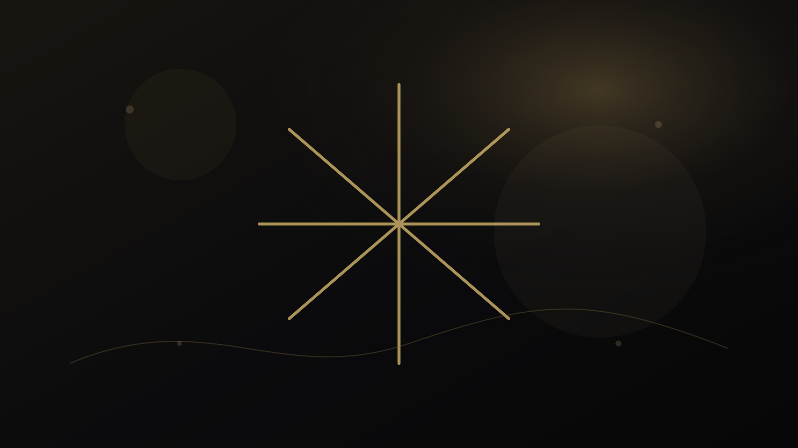
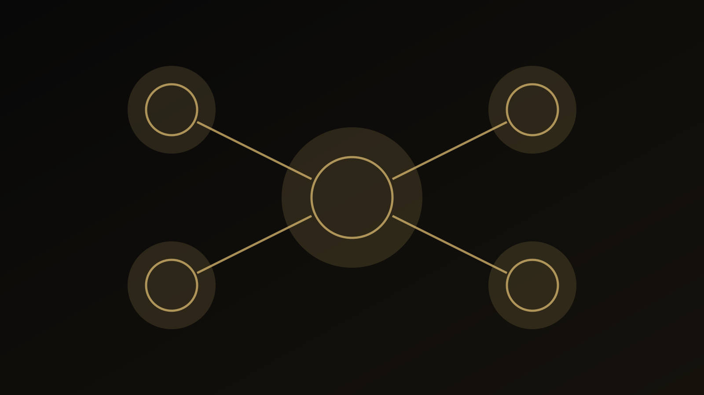

راهنمای جامع خدمات
خدمات آموزشی، پژوهشی و مشاوره؛ از مسئله واقعی تا مسیر حرفهای
وقتی همه خدمات در یک فهرست کنار هم قرار میگیرند، ممکن است تفاوت میان «راهنمایی عمومی»، «تحلیل حرفهای»، «ارزیابی چندمنبعی» و «پروژه سازمانی» از بین برود. نقطه شروع درست، نام خدمت نیست؛ مسئلهای است که باید روشن شود و سطح شواهدی که برای پاسخ به آن نیاز داریم.

خدمات آموزشی پژوهشی و مشاوره را از خود مسئله شروع کنیم
وقتی همه خدمات در یک فهرست کنار هم قرار میگیرند، ممکن است تفاوت میان «راهنمایی عمومی»، «تحلیل حرفهای»، «ارزیابی چندمنبعی» و «پروژه سازمانی» از بین برود. نقطه شروع درست، نام خدمت نیست؛ مسئلهای است که باید روشن شود و سطح شواهدی که برای پاسخ به آن نیاز داریم.
در این راهنما هدف ارائه نسخه آماده نیست. مسئله به اجزای کوچکتر تقسیم میشود تا معلوم باشد چه اطلاعاتی داریم، چه چیزی هنوز نامطمئن است و کدام نتیجه واقعاً از شواهد پشتیبانی میشود. این شیوه هم برای تصمیم انسانی مفیدتر است و هم از تبدیل یک شاخص یا یک تجربه به حکم کلی جلوگیری میکند.
پنج لایهای که در خدمات آموزشی پژوهشی و مشاوره باید جداگانه دیده شوند
۱. دانشآموز و خانواده
تصمیم تحصیلی زمانی کیفیت پیدا میکند که رتبه، سابقه عملکرد، علایق، شرایط خانواده و گزینههای واقعی در کنار هم دیده شوند.
۲. پژوهشگر و دانشگاهی
نیاز پژوهشگر ممکن است از تشخیص ضعف مقاله تا انتخاب مجله، ویرایش انگلیسی، پاسخ به داوران یا آمادگی برای یک موقعیت دانشگاهی متفاوت باشد.
۳. معلم و مدرس
مسئله حرفهای معلم میتواند به تدریس، مواد آموزشی، سنجش، بازخورد یا رشد حرفهای مربوط باشد و هر کدام نوع دیگری از شواهد میخواهد.
۴. مدرسه و مؤسسه
پروژه سازمانی باید دامنه، ذینفعان، خروجی و معیار ارزیابی روشن داشته باشد؛ یک جلسه مشاوره جای اجرای کامل پروژه را نمیگیرد.
۵. مرز حرفهای
خدمت خوب باید روشن کند چه چیزی در دامنه کار است، چه چیزی نیست و مسئولیت تصمیم نهایی در کجا باقی میماند.
اهمیت این تفکیک در آن است که دو مورد میتوانند همزمان درست باشند اما پیام یکسانی نداشته باشند. به همین دلیل، بهتر است پیش از جمعبندی، برای هر لایه مشخص کنیم «شاهد چیست؟»، «حد تفسیر کجاست؟» و «چه اطلاعاتی ممکن است نتیجه را تغییر دهد؟»

خطاهای رایج؛ چه چیزهایی کیفیت تصمیم را پایین میآورند؟
۱. انتخاب خدمت فقط بر اساس نام یا قیمت بدون تعریف مسئله
این خطا معمولاً بخشی از اطلاعات را بیش از اندازه پررنگ میکند و امکان دیدن تصویر کامل را کاهش میدهد. راه بهتر این است که ادعا یا تصمیم به شواهد مشخص و محدودیتهای همان شواهد متصل شود.
۲. ورود مستقیم به راهحل پیش از جمعآوری شواهد کافی
این خطا معمولاً بخشی از اطلاعات را بیش از اندازه پررنگ میکند و امکان دیدن تصویر کامل را کاهش میدهد. راه بهتر این است که ادعا یا تصمیم به شواهد مشخص و محدودیتهای همان شواهد متصل شود.
۳. یکیکردن مسائل تحصیلی، پژوهشی و سازمانی در یک نسخه عمومی
این خطا معمولاً بخشی از اطلاعات را بیش از اندازه پررنگ میکند و امکان دیدن تصویر کامل را کاهش میدهد. راه بهتر این است که ادعا یا تصمیم به شواهد مشخص و محدودیتهای همان شواهد متصل شود.
خطاهای بالا معمولاً از میل طبیعی ما به سادهکردن یک مسئله پیچیده میآیند. سادهسازی لازم است، اما نباید اطلاعاتی را حذف کند که اگر دیده میشدند، تصمیم یا تفسیر تغییر میکرد.
یک مسیر عملی برای حرکت از سؤال به اقدام
این مسیر عمداً مرحلهای است. اگر در یکی از مراحل شواهد کافی وجود ندارد، بهتر است همانجا توقف کنیم و اطلاعات تازه جمع کنیم تا اینکه با قطعیت ظاهری به مرحله بعد برویم.
چه زمانی کمک حرفهای معنا دارد؟
اگر مسئله به اطلاعات فردی، پرونده خصوصی، تحلیل تخصصی یا قضاوتی وابسته است که با مطالعه عمومی حل نمیشود، استفاده از خدمت حرفهای میتواند منطقی باشد. در مقابل، اگر پرسش عمومی است، مطالعه راهنماها و منابع رسمی باید نقطه شروع باقی بماند.
خدمات حرفهای باید پس از روشن شدن مسئله، دامنه و خروجی انتخاب شوند؛ هیچ خدمت عمومی جایگزین تشخیص بالینی، تصمیم حقوقی یا تضمین نتیجه نیست.
پرسشهای متداول درباره خدمات آموزشی پژوهشی و مشاوره
خدمات آموزشی پژوهشی و مشاوره دقیقاً چه مسئلهای را حل میکند؟
این موضوع زمانی مفید است که به یک پرسش یا تصمیم مشخص متصل شود. وقتی همه خدمات در یک فهرست کنار هم قرار میگیرند، ممکن است تفاوت میان «راهنمایی عمومی»، «تحلیل حرفهای»، «ارزیابی چندمنبعی» و «پروژه سازمانی» از بین برود. نقطه شروع درست، نام خدمت نیست؛ مسئلهای است که باید روشن شود و سطح شواهدی که برای پاسخ به آن نیاز داریم.
مهمترین خطا در خدمات آموزشی پژوهشی و مشاوره چیست؟
یکی از خطاهای رایج، انتخاب خدمت فقط بر اساس نام یا قیمت بدون تعریف مسئله است. کیفیت تصمیم زمانی بالاتر میرود که شواهد، محدودیتها و هدف استفاده از نتیجه روشن باشند.
چه زمانی کمک حرفهای برای خدمات آموزشی پژوهشی و مشاوره معنا دارد؟
وقتی پاسخ به اطلاعات فردی، قضاوت تخصصی یا بررسی پرونده وابسته است و راهنمای عمومی برای تصمیم کافی نیست. خدمات حرفهای باید پس از روشن شدن مسئله، دامنه و خروجی انتخاب شوند؛ هیچ خدمت عمومی جایگزین تشخیص بالینی، تصمیم حقوقی یا تضمین نتیجه نیست.
جمعبندی
خدمات آموزشی پژوهشی و مشاوره زمانی بیشترین ارزش را دارد که مسئله، شواهد، محدودیت و اقدام بعدی از هم جدا باشند. نتیجه خوب لزوماً نتیجه قطعی نیست؛ نتیجهای است که بتوان توضیح داد چرا با اطلاعات فعلی قابل دفاع است و چه چیزی ممکن است در آینده آن را تغییر دهد.